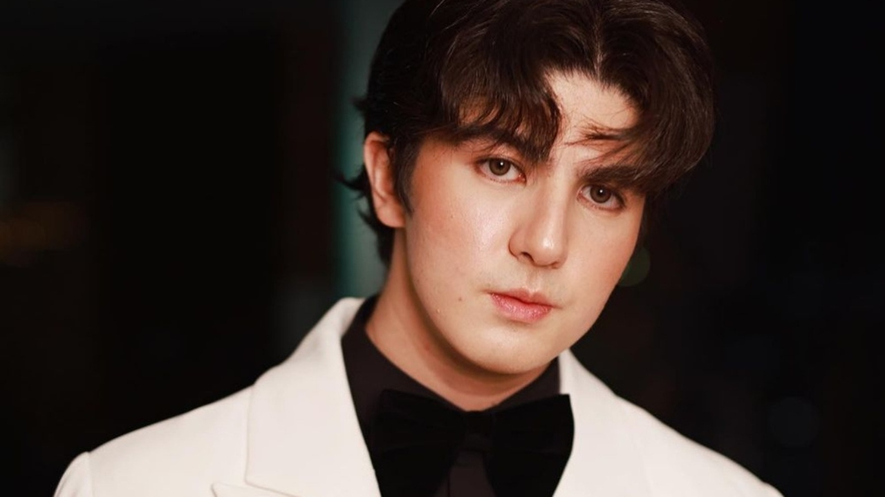

Kyline Alcantara And Mavy Legaspi’s relationship is no longer new, as they started their romance in 2021. Suddenly, one of her cryptic posts on X started the speculation of whether they called it quits. There is more to it. What do you think? Before heading onto Kyline and Mavy’s current status, let’s briefly learn how famous they are. Kyline Alcantara is an incredible songstress, podcaster, and social media personality. She hails from Ocampo and is now just 21 years old. When it comes to her acting credits, Kyline rose to fame for her portrayals in Annaliza and Kambal, Karibal. Did you not watch I Left My Heart in Sorsogon? It’s highly recommended to you. On the other hand, Mavy Legaspi is a 22-year-old internet personality. He was born to the Filipino actors – Zoren Legaspi and Carmina Villaroel. Mavy made endorsement deals with Baby Bench Cologne and Selecta Ice Cream. Yes, he is into modeling, too. It was in 2019 when he signed GMA Artist Center.

What is the evidence? As hinted already about the cryptic post, Kyline wrote, “I knew it.” She made it on 24 November 2023- just a few days ago. In case you are wondering what she knew, understandably, it’s something that the Annaliza actress was not happy about. Kylinw didn’t say anything or publicize anything related to the matter.
How did Kyline Alcantara and Mavy Legaspi’s relationship start? As you all know, the former acted in the film- “Kambal Karibal”, and Mavy’s mother- Carmina Villaroel, also starred in the same. That’s how the youngsters met each other and soon sparked romance. Surprisingly, Carmina also played a role in this speculation of their breakup. What did she do? A few days after Kyline’s post, Mavy’s mother also made some cryptic tweets, confusing fans more about the two’s relationship status. One of Carmina’s posts said, “People can destroy your image, damage your personality, [and] create rumors about you, but they can never take away your good deeds.” In addition to this, she also shared that no matter how people describe them, they will always be admired by those who love them best. This post was dedicated to her sons- Mavy and Cassy. But who did she mean would destroy his sons’ image? Did she mean Kyline anyway? In another post, Carmina said, “Mom knows best.” We are not sure whom she indirectly meant or whether it was just a general post. Fans are very confused, leading to speculation about the status of Kyline and Mavy’s relationship. Well, Mavy’s mother, Carmina, always seemed to be supportive of his relationship with Kyline. What happened suddenly? Is she against her? We wonder. Best wishes to both Kyline Alcantara and Mavy Legaspi for the upcoming days of their lives. Let’s not get more confused by the cryptic posts and wait for their official confirmation. Still, we hope their break-up rumors turn out to be false.